Windows 10 and 11freeMIT
Every Claude Code chat in one window.
Real terminals running the real claude. Grouped into workspaces. The ones that need you on top.
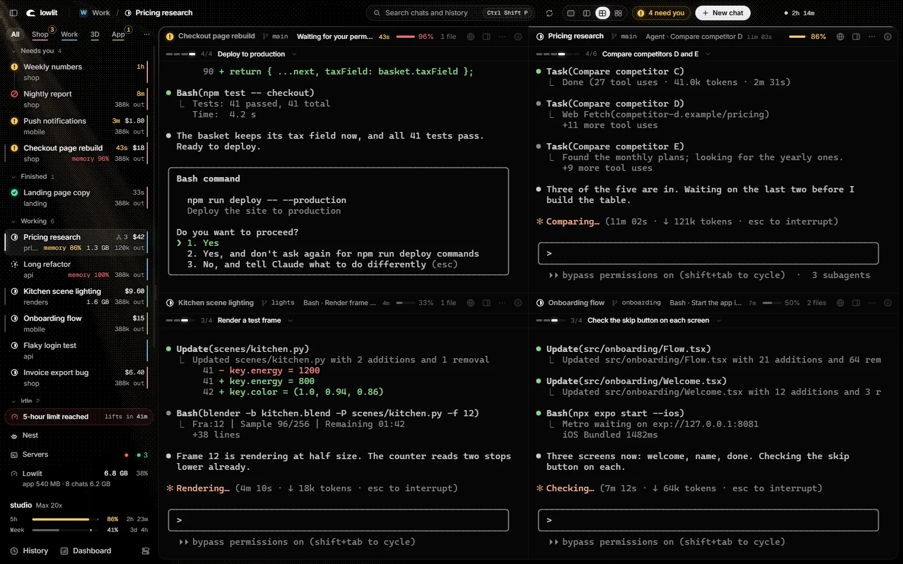
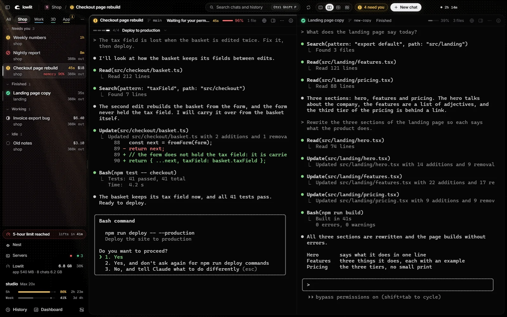
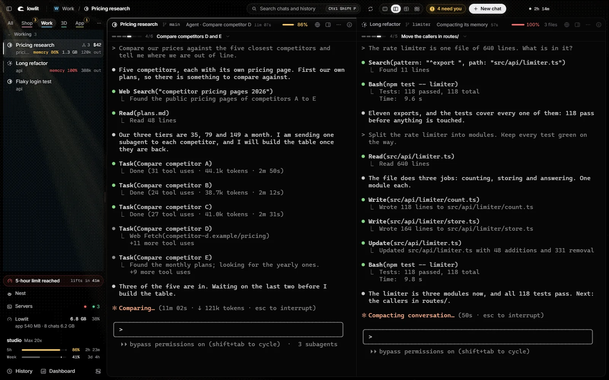
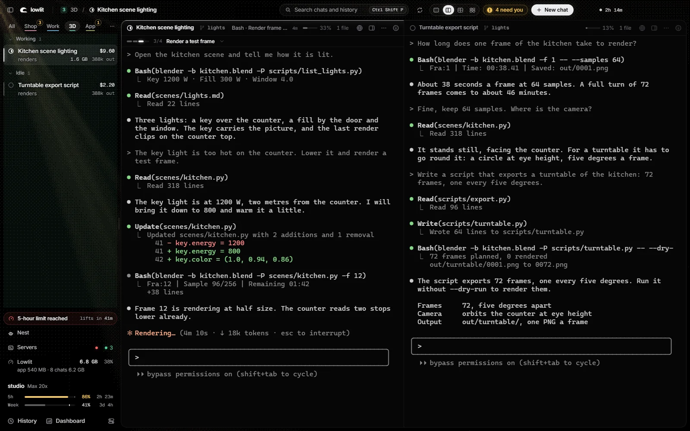
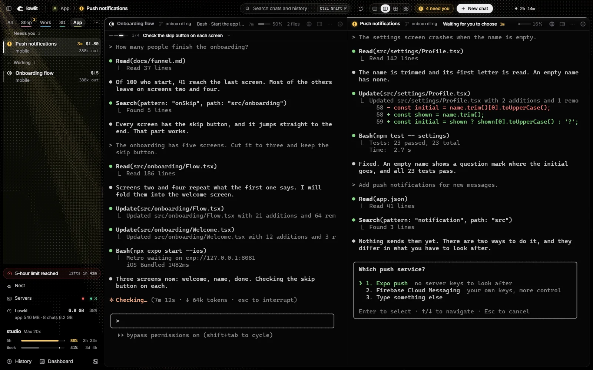
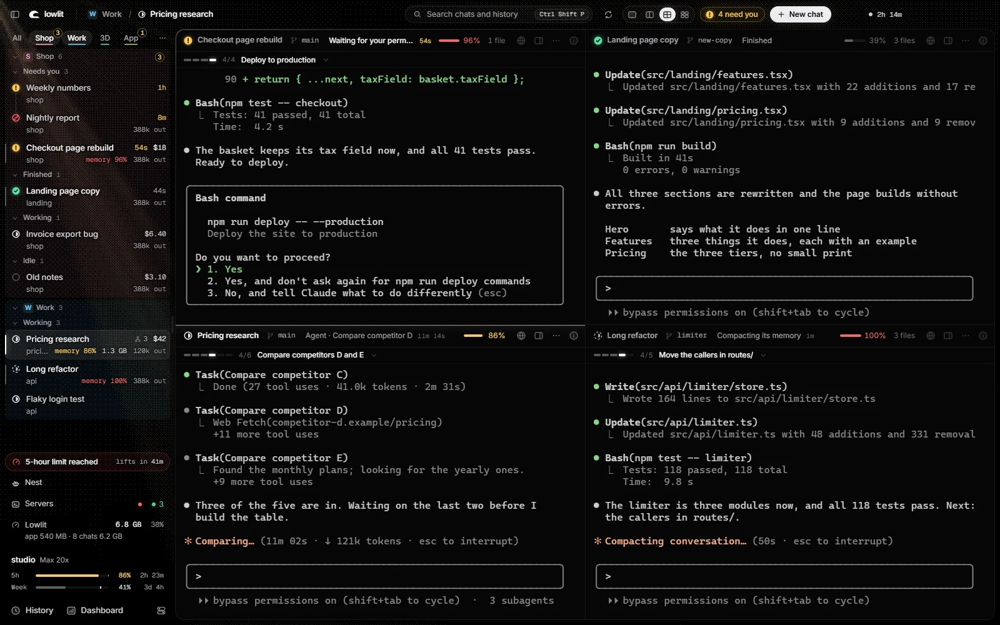
Also in the window
-
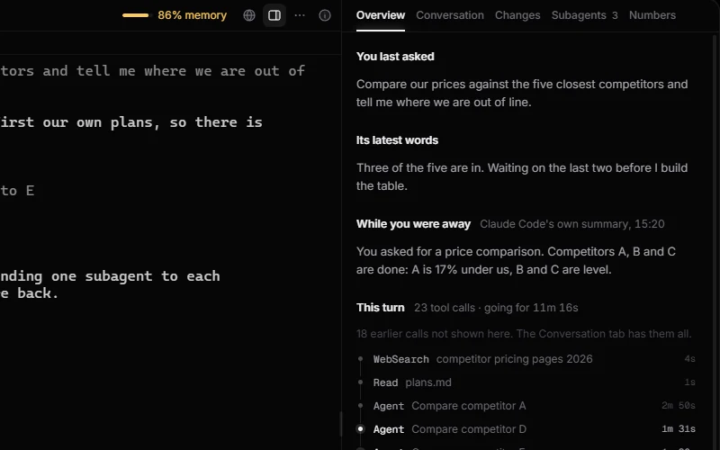
Panel Beside a chat: what you asked, this turn's tool calls, its subagents, what it changed. -
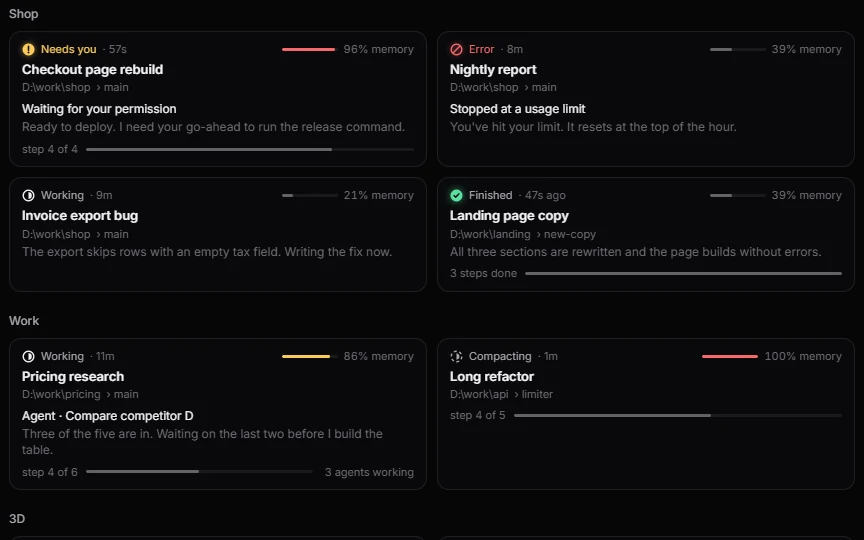
Cards Every chat as a card, by workspace. -
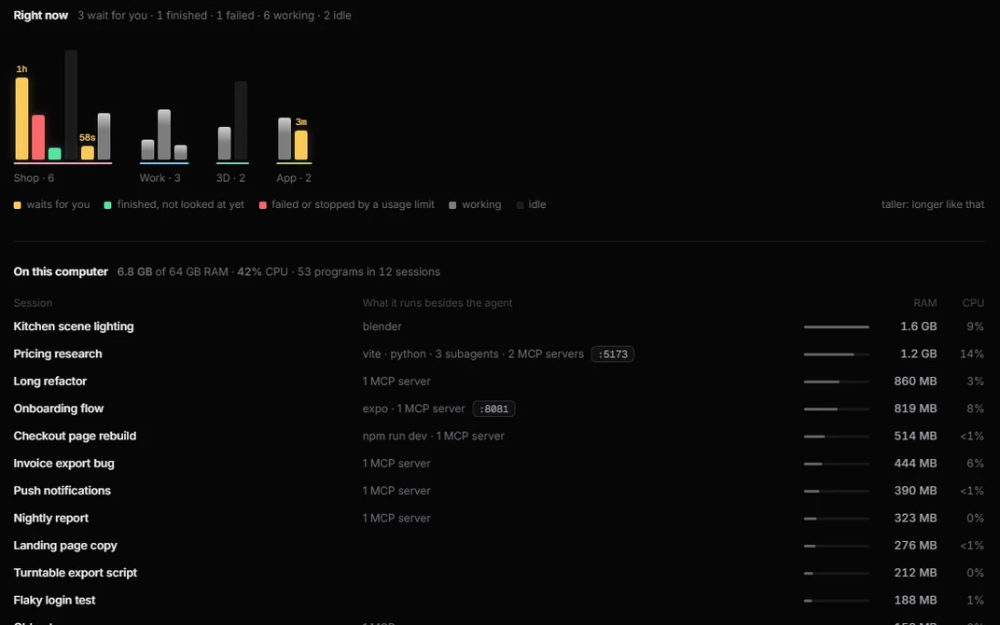
Dashboard What each session runs besides the agent: dev servers, MCP servers, ports, RAM, CPU. -
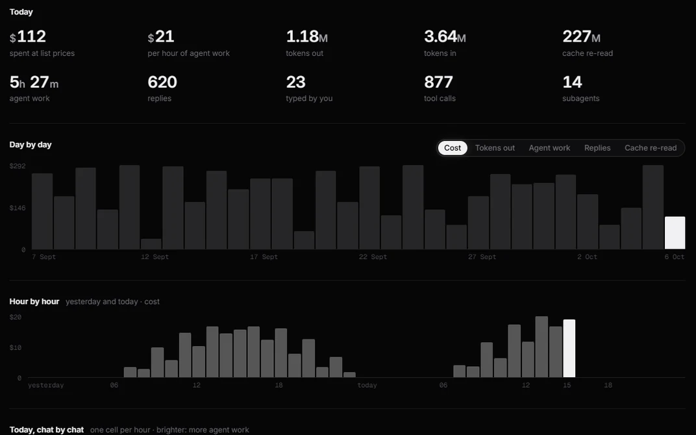
Cost What today cost at API list prices: by day, by hour, by chat. -
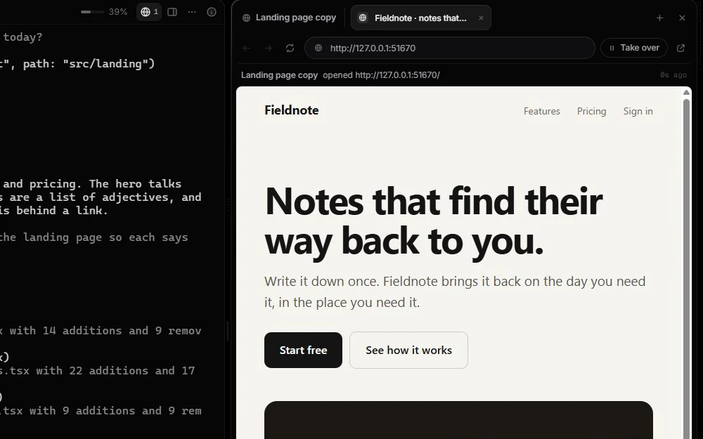
Browser A browser each chat can drive: open, read, click, type, screenshot. Watch, or take over. -
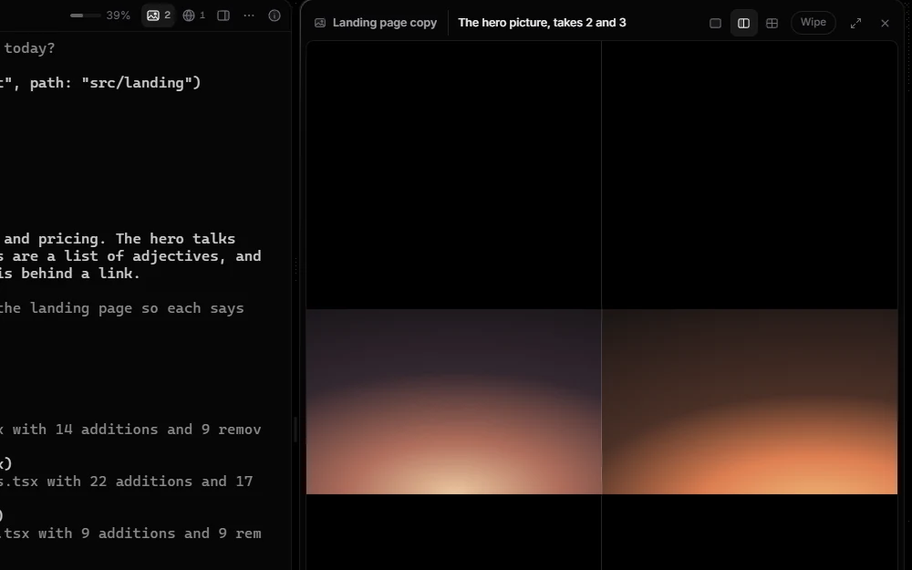
Viewer Pictures, video and sound open beside the chat that made them. Two takes side by side. -
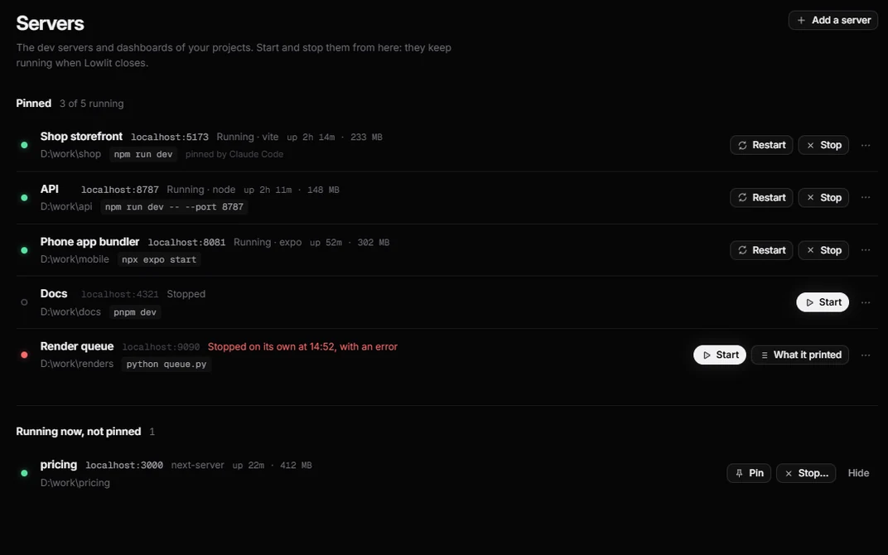
Servers Your dev servers, pinned: start, stop, restart, read what one printed. -
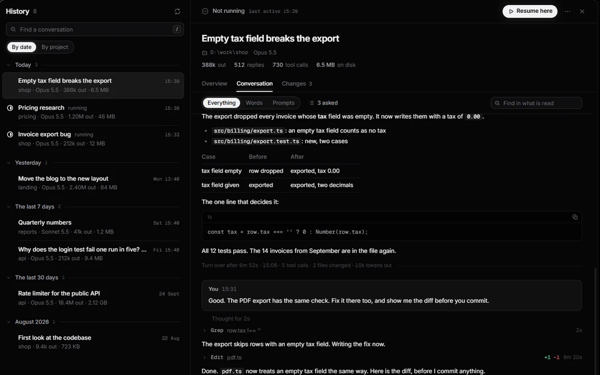
History Every past conversation on the machine. Resume here. -
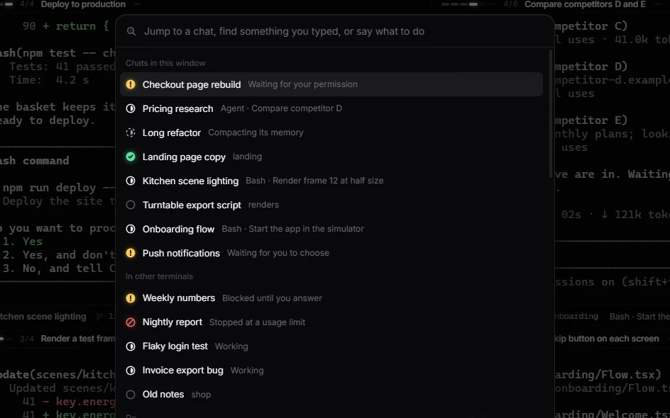
Search Ctrl Shift P: jump to a chat, find something you typed, run a command. -
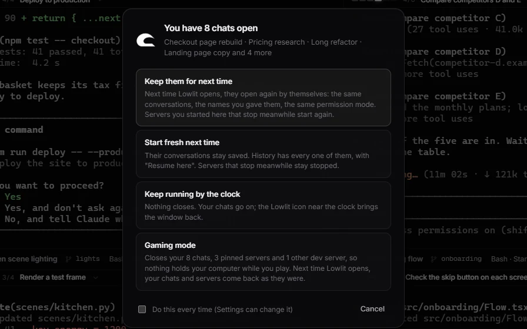
Closing With chats open, it asks: keep them, start fresh, keep running by the clock, or gaming mode.


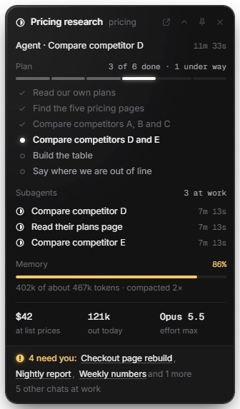
Floating card Stays over your other programs: the chat in front, its plan, who needs you.
- Ctrl Shift F
- The floating card
- Ctrl Shift N
- Next chat that needs you
- Ctrl Shift T / W
- New chat / close this one
- Ctrl 1 to 9
- A chat by its number in the list
- Ctrl Shift Enter
- One chat big, or back to side by side
- Ctrl Shift B / M
- Browser / Viewer
- Ctrl Shift U / H
- Dashboard / History
- Ctrl ,
- Settings, with every key
It never
- opens your login file. The key in it is never read or stored.
- talks to Anthropic. It cannot log in, log out or switch accounts.
- types by itself. Four buttons type into a chat, each on your click.
- sends anything off your computer, unless you switch that on.
It is the claude you already run, in a terminal: your settings, hooks, MCP servers and slash commands work unchanged. A keeper process holds the terminals, so your chats run on through a restart or a crash of the window.
Install
One line. You need Windows 10 or 11, Node.js 22 or newer, Git and Claude Code.
> irm https://getlowlit.pages.dev/install.ps1 | iex It checks for Git and Node.js, puts Lowlit in a folder of yours, fetches its parts and opens the window. No administrator rights, nothing compiled, nothing deleted. The script is short: read it first if you like. The same line updates Lowlit.
Or by hand:
> git clone https://github.com/anessbelbati/lowlit
> cd lowlit
> npm install
> npm startBoth ways are run on a clean Windows machine at every change. The limit bars need one entry in your Claude Code settings, and the Browser is off until you switch it on: the README has both.